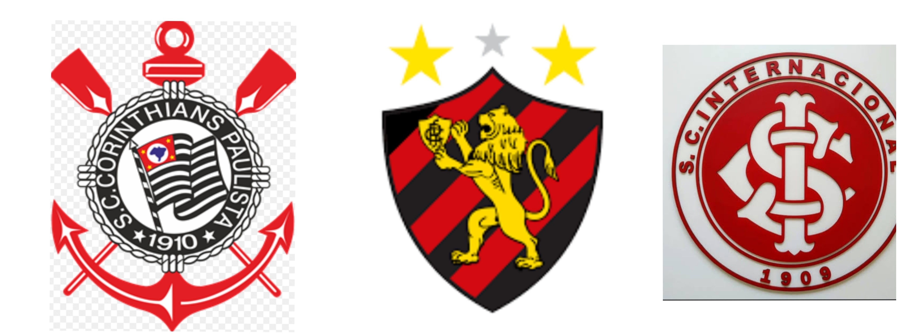
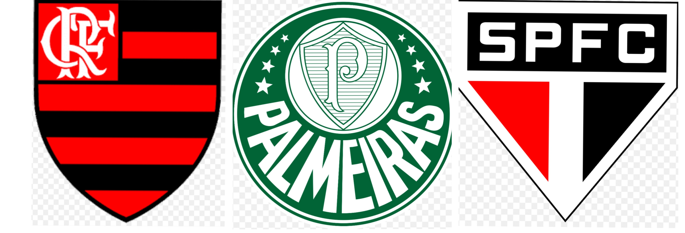
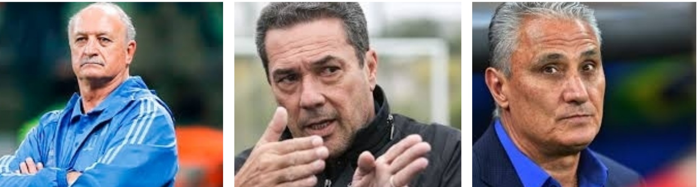
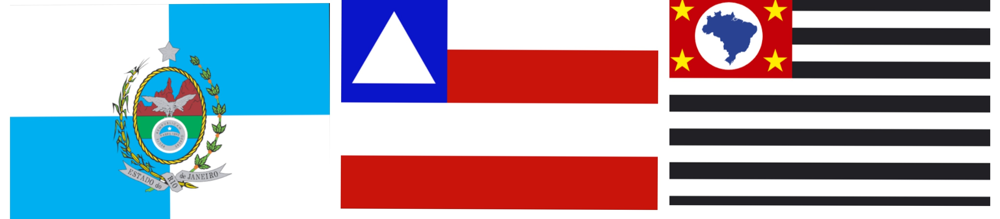
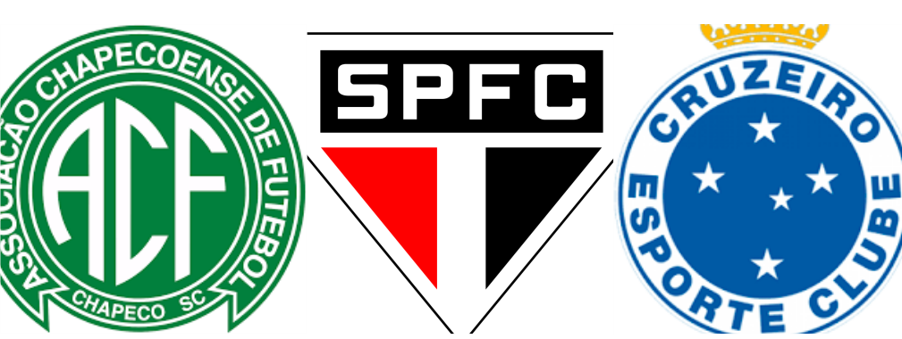
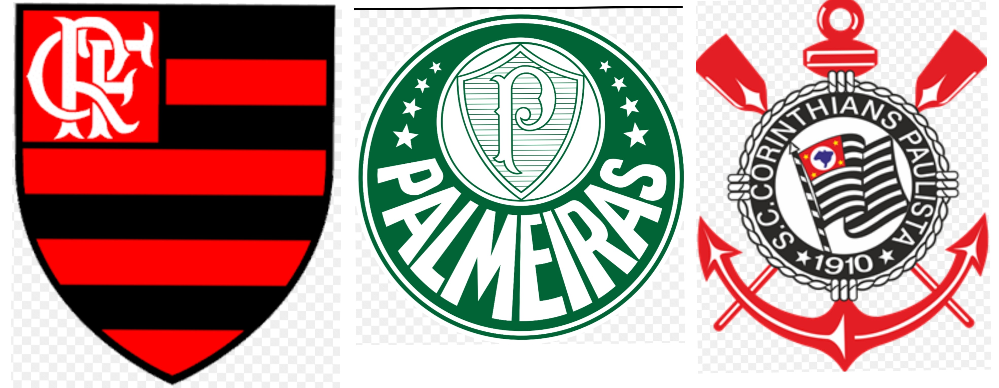
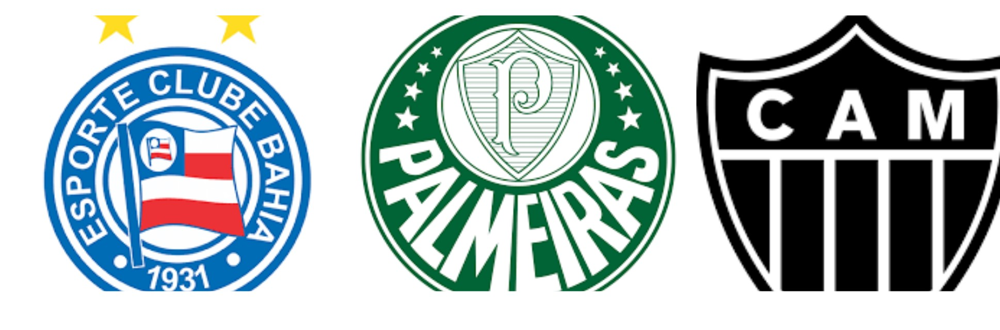
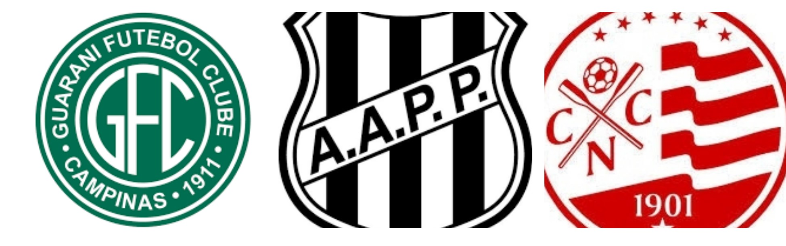
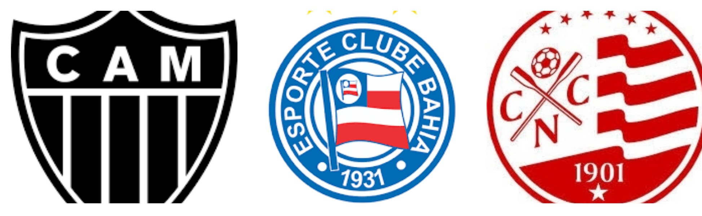
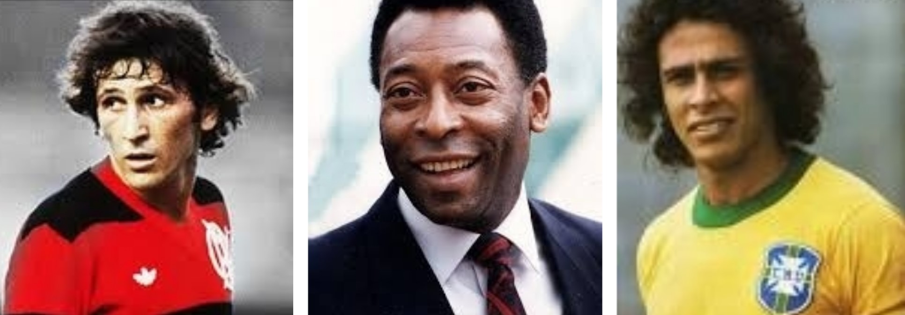

Quanto você sabe sobre o brasileirão?
01-Em 1983 ocorreu a maior goleada do Brasileirão, qual foi o resultado?
10 x 1
9 X 2
8 X 0
Confirmar

02-No ano de 1979 um time se tornou campeão de forma invicta, qual foi?
Corinthians
Sport
Internacional
Confirmar
03-A partir de que ano o campeonato adotou o sistema de pontos corridos?
2003
2005
2002
Confirmar

04-Qual é o maior campeão do campeonato?
Flamengo
Palmeiras
São Paulo
Confirmar

05-Qual é o técnico que mais vezes foi campeão?
Felipão
Luxemburgo
Tite
Confirmar

06-Qual é o estado com o maior número de títulos?
Rio de Janeiro
Bahia
São Paulo
Confirmar

07-Qual desses times nunca foi rebaixado para a série B do Brasileirão?
Chapecoense
São Paulo
Cruzeiro
Confirmar

08-Quem foi o Campeão do Brasileirão 2019?
Flamengo
Palmeiras
Corinthians
Confirmar

09-Em 1971 foi disputado o primeiro Campeonato Brasileiro, quem foi o campeão desse ano?
Bahia
Palmeiras
Atletico MG
Confirmar

10-Qual desses times já foi campeão brasileiro?
Guarani
Ponte Preta
Nautico
Confirmar

11-Qual clube esta 49 anos ano sem conquistar o Brasileirão?
Atletico MG
Bahia
Nautico
Confirmar

12-Qual é o maior artilheiro da história do brasileirão?
Zico
Pelé
Roberto Dianamite
Confirmar
Sua pontuação foi de:
pontos
Salvar Pontuação
Refazer Quiz